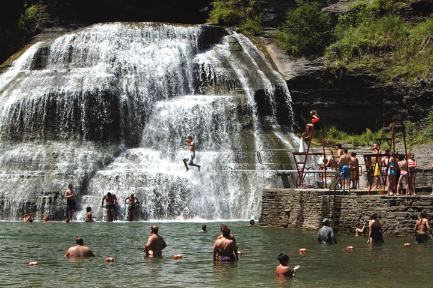
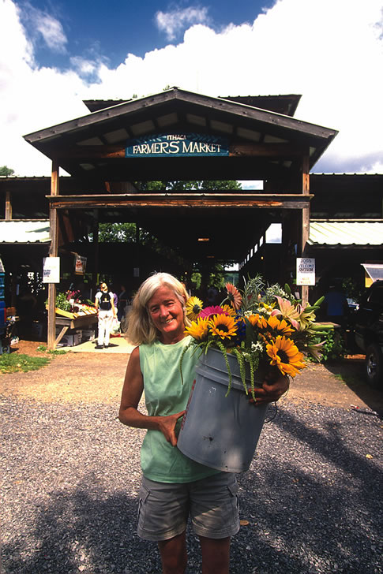
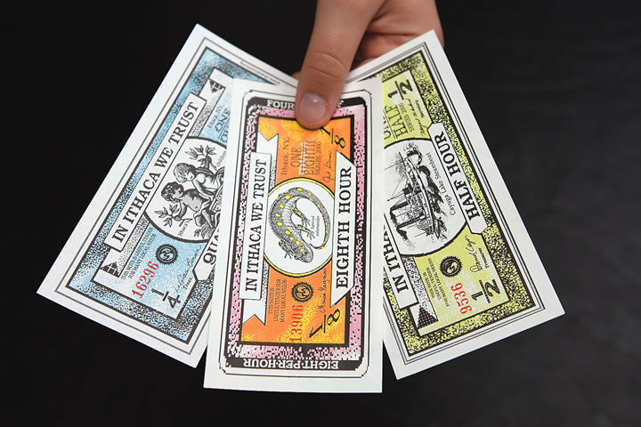

Ithaca just might be a utopia for the eco-minded. Unless, that is, you mind snow - the area averages 67.3 inches of it each year. This dynamic college town (home to Cornell University and Ithaca College) enjoys beautiful scenery at the southern tip of Cayuga Lake in New York’s Finger Lakes region. Within the city limits are gorges, numerous waterfalls and a scenic waterfront. Just a short drive away are charming villages, great parks and bountiful farmland, dotted with orchards and vineyards.
Food is an important element of Ithaca’s identity. The town is home to the famed Moosewood Restaurant, one of the original and most influential vegetarian restaurants in the country, and source of several best-selling cookbooks. Ithaca has an excellent farmers market, which is open four days a week over a long season. It’s under cover, in a volunteer-built pavilion right on the waterfront near the downtown pedestrian marketplace known as Ithaca Commons.
“Community builds” are an honored tradition in Ithaca. The Sciencenter, a children’s science museum with more than 200 hands-on exhibits, was built by volunteers - more than 2,200 people contributed more than 40,000 hours of work. When it was time for an expansion a few years ago, more than 1,000 volunteers pitched in to build an addition. The Sciencenter also has an outdoor park with science-oriented attractions; examples include a suspension bridge made of Kevlar cables and a miniature golf course where every hole poses a new problem, such as launching your ball with a giant catapult or getting it through swinging pendulums.
Ithaca is famous worldwide for creating a local currency called Ithaca Hours, which encourages people to shop locally owned businesses - more than 500 now accept the colorful bills, which are issued in various denominations of the value of an hour’s work at the prevailing wage. By using the local currency, Ithaca residents make sure their money supports their own community. The town also has cooperative health insurance called Ithaca Health Fund.
Ithaca recently joined the Mayors Climate Protection Agreement, in which more than 200 U.S. cities have pledged to reduce their greenhouse gas emissions in accordance with the Kyoto Protocol, the international agreement on climate change that the federal government rejected. Ithaca’s goal is to reduce its greenhouse gas emissions to 20 percent below 2001 levels by 2016. To that end, the city and Tompkins County have agreed to purchase wind energy - offsetting about 1 million pounds of carbon dioxide per year, the equivalent of planting more than 68,000 trees or not driving 868,000 miles each year.
The area’s environmental ethic is evident in the success of EcoVillage, a co-housing community in which 90 percent of the community’s 176 acres is preserved as open space. Residents live in passive solar homes and share ownership of many things, including cars, playground equipment, clothes washers and gardening tools. There’s also a community garden and a Community Supported Agriculture program.
Real estate is quite affordable in the area. The highest prices and lowest availability are in the city because there is little new construction. Houses find buyers quickly. “People who come here and find something they like need to move quickly,” says Audrey Edelman, a local real estate agent. Smaller towns within a 10 to 20 mile radius of Ithaca are other options, especially for those who love historic houses, which are abundant in the area. The best soil for farming and gardening is a bit farther north, on either side of the lake. Rural land sells for $1,000 to $3,000 an acre for large parcels, more for smaller ones.
With the amenities of a much larger city, the scenery of a much smaller one and an active and progressive citizenry, Ithaca shines as a model of a fun, unique and sustainable place to live.
Do you live in Ithaca? Have you visited? Please post your comments below.
Population: 19,896
County: Tompkins
Climate: cold and snowy winters; warm and moist summers
Cost of living index: 103.7
Median home price: $216,300
Alternative energy: net metering and solar, wind and green building incentives
Don’t miss: The Circle Greenway, a 10 mile walking or bicycling tour of Ithaca.
|
 JON REIS PHOTO & DESIGN Summer fun at one of Ithaca's many waterfalls. |
 JON REIS PHOTO & DESIGN Ithaca's renowned farmers market. |
 JON REIS PHOTO & DESIGN Ithaca Hours, the famous local currency. |